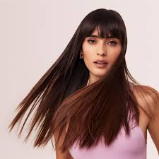
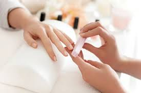
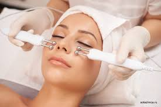

Послуги салону
| Професійний догляд за волоссям |
Манікюр та педикюр |
Косметологічні процедури |
Масаж та догляд за тілом |
|  |
 |
 |
 |
| Завітайте на послугу до нашого партнера |
Завітайте на послугу до нашого партнера |
Завітайте на послугу до нашого партнера |
Завітайте на послугу до нашого партнера |
|
Щоб волосся виглядало доглянутим, красивим і здоровим, потрібно системно за ним доглядати. Стан пасом залежить від нашого раціону, способу життя, кількості стресів, екології та інших чинників. І звичайно ж, волосся не може бути розкішним без правильного догляду. Правильний шампунь, кондиціонер та регулярні маски дають своє. Але щоб досягти реально помітного результату, краще віддати свої локони до рук професіоналів. |
Доглянуті руки та свіжий манікюр — це вже невід’ємна частина зовнішнього вигляду.У Well beauty ми пропонуємо послуги обрізного і необрізного манікюру, покриття гель-лаком або еко-покриття, а також альтернативний догляд: бразильський манікюр і японське покриття P. Shine. |
В нашій студії ви отримаєте результат, який перевершить ваші очікування. Дивуйте, сяйте і любіть себе разом з Well beauty. Тільки ЕКО-матеріали, тільки професійні майстри в нашій студії! |
Ми знаємо як перемогти тривогу та напругу в тілі, впоратися з дедлайнами та напруженнями на роботі, привести тіло в порядок і прибрати післяпологову депресію, підготувати до змагання або відновити після марафону, розслабити Ваше тіло та дати психіці відпочити від усього та всіх. |